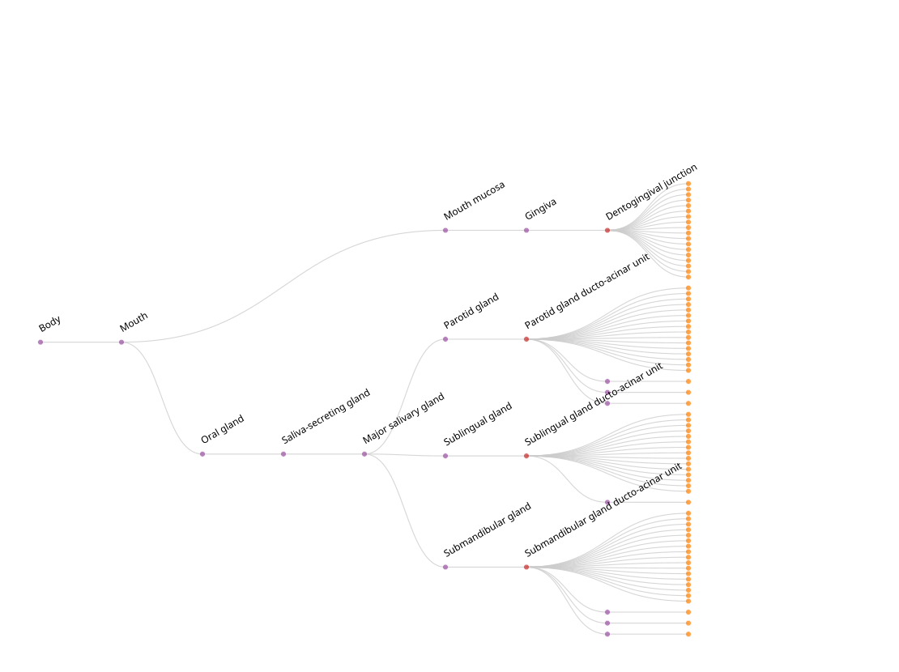

Human Reference Atlas - Organ Visualizations
A Vega-based visualization pipeline for generating organ-specific multiscale anatomical trees, supported by reusable Python workflows and configuration files for future Atlas releases.

Focus
Updating, validating, and presenting anatomical structure data in a form that is easier to inspect across scale and organ systems.
Tools
Python, Jupyter, Vega, data validation, visualization pipeline development.